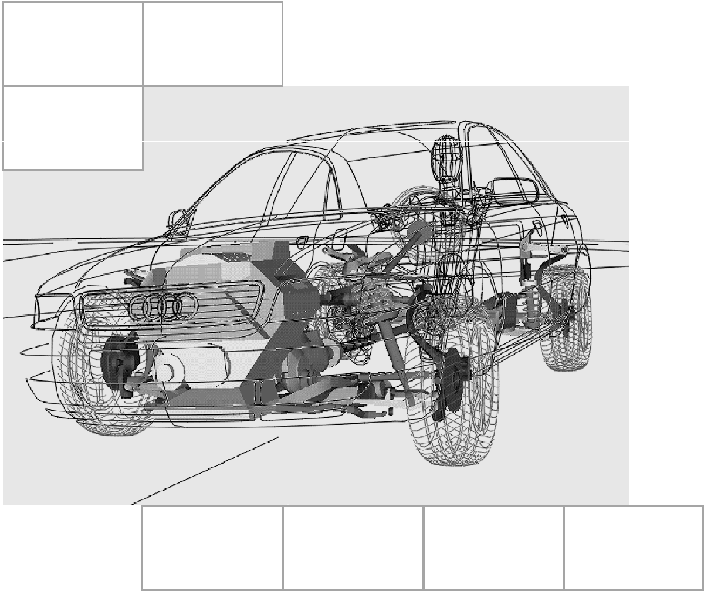
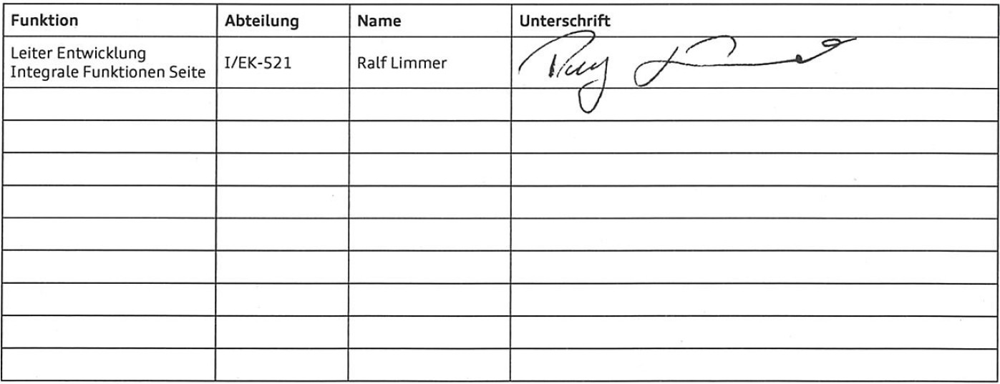

[redacted-person]
[redacted]
[redacted-phone]
[redacted-phone]
[redacted-person] / OE
Hausruf [redacted-phone]
Telefax [redacted]
[redacted-co]

D[redacted][redacted]LAH.DUM.880.H
| [redacted]Seite | [redacted-person] | [redacted-person] |
Abstimmung

Im Original unterschrieben
Inhaltsverzeichnis
[redacted-person] beschreibt vom Entwicklungspartner geforderte Leistungen bzgl. FE-Modellen im [redacted-person].
In diesem Lastenheft wird die anzuwendende Methodik detailliert beschrieben. [redacted-person] resultiert aus der Entwicklungserfahrung der [redacted-co] und ist deshalb für den Entwicklungsprozess bindend. Damit soll eine hohe Aussagefähigkeit der Simulationsergebnisse sichergestellt werden. [redacted-person] sind nur dann zulässig, wenn sie in [redacted-person] besser oder effektiver sind und dies der [redacted-co]-Fachabteilung eindeutig nachgewiesen wird und von dieser akzeptiert wurde.
Abweichungen von diesem Lastenheft sind während der Angebotsphase mit der [redacted-person] Insassenschutzsysteme abzustimmen und schriftlich (mit Unterschrift [redacted-co]) festzuhalten. Dies gilt insbesondere für vom Entwicklungspartner ausgeschlossene Teilumfänge und für – aus Sicht des Entwicklungspartners – zusätzlich erforderliche Umfänge.
Inhalte dieses Lastenheftes dürfen Dritten ohne ausdrückliche Genehmigung durch die [redacted-co] nicht zugänglich gemacht werden. Sollte durch Nichtbeachtung des [redacted-person] entstehen, behält sich die [redacted-co] das Recht vor, einen Dritten zu beauftragen, um dies auszugleichen.
Ziel ist es, die Entwicklung von Seitenschutzsystemen durch eine in den Gesamtprojektablauf integrierte Simulation zu unterstützen.
Es ist ein „CAE [redacted-person]“ zu benennen, dessen Teilnahme an Entwicklungsgesprächen – bei Bedarf – sicherzustellen ist.
Die zu verwendende Version des [redacted-person] Crash wird von der [redacted-co] Fachabteilung vorgegeben. Die [redacted-co]-internen Arbeitsabläufe erfordern eine regelmäßige Aktualisierung der Includes auf eine neuere [redacted]wird von der [redacted-co] Fachabteilung mit ausreichend Vorlauf zusammen mit der neu zu verwendenden [redacted-person] Version und einem verbindlichen Termin beim Auftragnehmer angezeigt. Zu diesem Termin hat der Auftragnehmer an die [redacted-co] Fachabteilung zu übergeben:
[redacted-person], die vom Auftragnehmer hauptverantwortlich erstellt und gepflegt werden in neuer [redacted-person] Version.
Dokumentation einer oder mehrerer repräsentativer Vergleichsrechnungen, die aufzeigen, dass durch die Umstellung keine der relevanten Ergebnisgrößen nennenswert verändert wird.
[redacted-person] sind in jedem Fall durchzuführen. [redacted-person] der Syntax zwischen der neuen und alten Version ist nicht ausreichend. Sollten die Vergleichsrechnungen zeigen, dass die Ergebnisse der angepassten Includes von der Referenzrechnung abweichen, so sind die Ursachen für die Abweichung zu untersuchen und zu korrigieren. Ggf. sind Validationen auf bestehende Komponentenversuche oder ähnliches erneut durchzuführen. [redacted-person] des Aufwands während der Angebotserstellung kann von max. einer Umstellung pro Kalenderjahr ausgegangen werden.
[redacted-person] müssen in der Lage sein, zu einem frühen [redacted-person] hinsichtlich der Insassenbelastungen in den in Kapitel 4.1.1 genannten Crashlastfällen zu liefern und dienen der Systemauslegung und der Entscheidungsfindung der betroffenen [redacted-co]- Fachabteilung bzgl. sicherheitsrelevanter Themen im Fahrzeugprojekt. [redacted-person] wird hierbei auf die Funktion des Gesamtsystems gelegt.
[redacted-person] der eingesetzten Komponenten ist durch eine aktuell zu haltende Dokumentation im Include sowie in LoCo zu dokumentieren. Hierin sind neben der Bauteilbenennung auch der Entwicklungsstand, das Erstellungsdatum, der Bearbeiter sowie die zugrundeliegenden Teilenummern und Stände aufzuführen. Ferner sind die im Rahmen der Entwicklung erarbeiteten Modelle jederzeit dem Auftraggeber zur Verfügung zu stellen.
[redacted-person] trägt durch sein Bauteil eine Mitverantwortung für die [redacted-person]. Dies gilt auch bei Bauteilen, welche als COP-Teile vorgesehen sind. In diesem Rahmen sind dem Systementwickler von den Komponentenlieferanten geeignete Berechnungsmodelle zum Zweck der Systemauslegung zur Verfügung zu stellen.
Für jeden in Kapitel 4.1.1 genannten Lastfall ist ein Insassenschutzmodell aufzubauen. [redacted-person] müssen nicht zeitgleich vorliegen, eine Priorisierung der Lastfälle kann in Absprache mit der [redacted-co]- Fachabteilung geschehen. [redacted-person] müssen jedoch rechtzeitig als validierter Stand vorliegen, um Ergebnisse zu ausgewählten Meilensteinen generieren zu können.
[redacted-person], bzw. deren Verhalten, welche für die Beurteilung der Schutzwirkung des Gesamtsystems relevant sind, müssen in den Insassenschutzmodellen abgebildet werden. Die in diesem Kapitel aufgeführten Baugruppen sind aus heutiger Sicht insassenschutzrelevant. [redacted-person] erhebt jedoch keinen Anspruch auf Vollständigkeit, sondern ist für jedes Fahrzeugprojekt individuell zu prüfen bzw. zu ergänzen. Bei relevanten Änderungen hinsichtlich Funktion und Geometrie ist eine Anpassung der betroffenen Bauteile in den Modellen vorzunehmen.
Sofern, durch den Projektablauf bedingt, zu einem Zeitpunkt benötigte CAD/CAE-Daten bzw. Informationen zu bestimmten Kennungen nicht vorliegen, sind diese durch entsprechende Annahmen nach Absprache mit der [redacted-co]/GE-Fachabteilung festzulegen. Es kann daher erforderlich sein, vorhandene Modelle aus vergleichbaren Fahrzeugen bzw. Vorgängermodellen durch Morphing oder ähnliches an Abtast- oder Strakdaten bzw. Prinzipschnitte anzupassen.
[redacted-person] und allgemeinen Anforderungen zur Erstellung und Auswertung der FE- Modelle bzw. FE-Simulationen sind dem Lastenheft
und
zu entnehmen.
Während des Projektablaufs sind alle Inputdecks, Ergebnisfiles, Dokumentationen und Auswertungen durch den Berechnungslieferanten bei [redacted-co] in Datenbanken (LoCo, CAE-Bench2) zu importieren und auszuwerten (CAViT).
[redacted-person] müssen alle zur Bewertung der Insassenbelastung relevanten Bauteile beinhalten. Die nachfolgend aufgeführten Bauteile stellen eine grundsätzliche Anforderung dar, die in allen Insassenschutzmodellen zu integrieren sind. Darüber hinaus kann eine weitere Detaillierung im Projekt erforderlich sein, wie z.[redacted-person] Modellierung von Dichtungen, Kabeln, Package der Tür- und Säulenverkleidung, Soundausstattungen sowie Sonderausstattungen, um die Worst-Case-Varianten betrachten zu können. Diese werden in Absprache mit der [redacted-co]/GE–Fachabteilung bestimmt. Falls eine Worst-Case-Variante noch nicht bekannt ist, so ist die Bestimmung dieser mittels Simulationen zu unterstützen.
[redacted-person], die von Schnittstellenpartnern kommen, sind bei Übernahme die Erfüllung der Modellierungsanforderungen (LAH.DUM.880.FP) sowie notwendige darüber hinausgehende Anforderungen zu überprüfen und falls erforderlich Dokumentationen über Abweichungen für den Auftraggeber und Schnittstellenpartner zu erzeugen.
[redacted-person] der Fahrzeugkarosse hat in der Insassensimulation die Fahrzeugbewegung und Fahrzeugverformung in dem für den Insassen relevanten Zeitbereich richtig abzubilden. Voraussetzung hierfür ist, dass die Modelle sowohl die globalen Bewegungen, die Energieabsorption des Fahrzeugs als auch die lokalen Deformationen genau prognostizieren.
Die [redacted-co]-Fachabteilung „[redacted-person]“ stellt entsprechende Basis-FE-Modelle zur Verfügung. Es kann aber notwendig sein, diese für die Belange der Insassensimulation zu ergänzen bzw. weiter zu detaillieren.
Weiterhin kann es notwendig sein, Prinzipuntersuchungen zum Strukturverhalten aus [redacted-person] durchzuführen.
[redacted-person] und Gestaltung der Verkleidung sind wesentliche Stellgrößen für die Insassenbelastungen. Deshalb ist es wichtig, die Ergebnisse der Insassensimulation frühzeitig in den Design- und Konstruktions-Prozess einzusteuern.
In frühen Projektphasen sind basierend auf Schnitten, Abtastdaten oder ähnlichem Verkleidungsmodelle zu erstellen bzw. Modelle aus anderen Projekten (zum [redacted-person]) auf diese Randbedingungen anzupassen. Falls notwendig sind die Modelle auf aktuellen Modellierungsstandard zu aktualisieren.
Wenn bzw. sobald detaillierte Türverkleidungs-Modelle zur Verfügung stehen, sind diese zu verwenden bzw. zu übernehmen und gegebenenfalls anzupassen. Falls keine detaillierten Modelle von anderen Abteilungen zur Verfügung gestellt werden können, so sind diese in Absprache mit der [redacted-co]/GE-Fachabteilung zu erstellen.
[redacted-person] der Verkleidung sind möglichst realistisch abzubilden:
Lasteinleitung in Dummy, Airbag, Sitz-System durch Brüstung, Armlehne und Türtasche
Kinematik der Anstoßflächen
Anbindungen (Clipse, Verschraubungen) an das Türinnenblech müssen so modelliert werden, dass
die Belastungen auf die Anbindung ausgewertet werden können (zum Beispiel durch SECFOs)
kraftgesteuertes Versagen der Anbindungen möglich ist
Schraubverbindung innerhalb der Türverkleidung und zur Anbindung an den Rohbau haben über Kontakt zu erfolgen. Dazu sind die Schrauben zu modellieren und mit Vorspannung zu versehen (siehe LAH.DUM.880.FP)
[redacted-person] im Bereich der Brüstung (Einhängeleiste) an den Türrohbau ist zu max. 50% gleichverteilt über die Länge mittels TIED anzubinden. [redacted-person] hat zu Projektstart und zu den Meilensteinen P-frei, B-frei und BMG zu erfolgen. [redacted-person] vorliegen ist das Verhalten zu validieren und die Modellierung falls erforderlich anzupassen.
[redacted-person] bzw. Kanten, durch Nichtbetrachtung von z.[redacted-person], sind zu schließen
[redacted-person] können nach Absprache mit der [redacted-co]/GE-Fachabteilung vorgenommen werden.
Validierung
[redacted-person] gilt nur in der Serienentwicklung.
Die im Folgenden aufgeführten Lastfälle sind im Hinblick auf Energieabsorptionsvermögen, dynamische Steifigkeit und Materialverhalten bzw. -versagen von Verbindungstechnik vom Entwicklungspartner zur Validierung heranzuziehen. [redacted-person] sind vom Auftragnehmer durchzuführen. [redacted-person] besteht aus Türverkleidung, Türinnenblech und der Aufnahme des Türinnenblechs. [redacted-person] sind vom Aufragnehmer zu erstellen und Teil dieses Angebotes. [redacted-person] (Form, Masse, Auftreffpunkt, Aufschlaggeschwindigkeit der Ersatzkörper) sind vom Auftragnehmer durch Vorsimulationen auf die im Gesamtfahrzeug zu erwartenden Belastungen in Crashlastfällen abzustimmen und mit der [redacted-co]-Fachabteilung abzustimmen. Die dazu notwendige Modelle sind vom Auftragnehmer aufzubauen:
Ersatzkörperaufschlag im Brüstungsbereich an verschiedenen, lastfallrelevanten Punkten
Ersatzkörperaufschlag im Armlehnenbereich an verschiedenen, lastfallrelevanten Punkten
Ersatzkörperaufschlag im Beckenauftreffbereich an verschiedenen, lastfallrelevanten Punkten
Dies gilt für die vordere sowie die hintere Türverkleidung beziehungsweise Seitenverkleidung.
[redacted-person], die Ablage der Versuchs- und Simulationsdaten sowie der Inhalt des [redacted-person]/Simulation sind dem Lastenheft
zu entnehmen.
[redacted-person] des Greenhouses sind zu modellieren:
A-/B-/C- und D-Säulenverkleidungen, sofern im Bereich des Insassen
Radhausverkleidung, sofern im Bereich des Insassen
Dachrahmen und Hecklappenverkleidung, sofern im Bereich des Insassen
Schwellerverkleidung, sofern im Bereich des Insassen
Himmel
Hutablage, sofern relevant für die Kopfairbagentfaltung
Dichtungen, sofern relevant für die Kopfairbagentfaltung beziehungsweise im Bereich des Insassen (siehe LAH.DUM.880.FP)
Kabel, sofern relevant für die Kopfairbagentfaltung beziehungsweise im Bereich des Insassen (siehe LAH.DUM.880.FP)
In der frühen Projektphase sind Grobmodelle auf Basis von Strak- oder CAD-Daten bzw. auf Basis von anderen Projekten (zum [redacted-person]) zu erstellen. Falls notwendig sind die Modelle auf aktuellen Modellierungsstandard zu aktualisieren.
[redacted-person] der Airbags auf den Verkleidungsteilen ist mit Versuchen abzugleichen und entsprechend zu dokumentieren und nachzuweisen. Falls noch kein aktueller Airbag vorhanden ist, so kann der Abgleich mit Vorgängermodellen erfolgen.
Wenn bzw. sobald detaillierte Greenhouse-Modelle (z.[redacted-person] der FMVSS 201 Entwicklung) zur Verfügung stehen, sind diese zu verwenden bzw. zu übernehmen und anzupassen und zur Kopfairbagentfaltungs-untersuchung und HIC Bewertung einzusetzen. Falls keine detaillierten Modelle von anderen Abteilungen zur Verfügung gestellt werden können, so sind diese in Absprache mit der [redacted-co]/GE-Fachabteilung zu erstellen.
[redacted-person] des Greenhouse einer anderen [redacted-co]-Fachabteilung ist für den Bereich oberhalb der Türbrüstung keine über die FMVSS201 hinausgehende Validierung gefordert.
[redacted-person] führt in der Serienentwicklung zusätzliche Versuche im unteren B-Säulenbereich durch. [redacted-person] sind im Hinblick auf Energieabsorptionsvermögen, dynamische Steifigkeit und Materialverhalten bzw. -versagen von Verbindungstechnik vom Entwicklungspartner zur Validierung heranzuziehen. [redacted-person] sind vom Auftragnehmer durchzuführen. [redacted-person] sind vom Aufragnehmer zu erstellen und Teil dieses Angebotes. [redacted-person] (Form, Masse, Auftreffpunkt, Aufschlaggeschwindigkeit der Ersatzkörper) sind vom Auftragnehmer durch Vorsimulationen auf die im Gesamtfahrzeug zu erwartenden Belastungen in Crashlastfällen abzustimmen und mit der [redacted-co]-Fachabteilung abzustimmen. Die dazu notwendige Modelle sind vom Auftragnehmer aufzubauen.
Bei einem vom Auftragnehmer erstellten Greenhouse kann auch eine Validierung oberhalb der Brüstung notwendig sein. Diese ist in Absprache mit der [redacted-co]/GE-Fachabteilung durchzuführen.
[redacted-person], die Ablage der Versuchs- und Simulationsdaten sowie der Inhalt des [redacted-person]/Simulation sind dem Lastenheft
zu entnehmen.
[redacted-person] wird in der Serienentwicklung durch die [redacted-co]-Fachabteilung zur Verfügung gestellt. In früheren Projektphasen ist der Einbau eines Cockpits nicht notwendig.
[redacted-person] kann entfallen, wenn simulativ gezeigt wird, dass es keinen Einfluss auf die Insassenbelastungen hat. [redacted-person] hat zu Projektstart und zu den Meilensteinen P-frei, B-frei und BMG zu erfolgen.
Falls das Cockpit großer Einfluss auf die Rechenzeit hat, so ist ein Ersatzmodell zu erstellen und in die Fahrzeugumgebung zu integrieren.
[redacted-person] werden separat mit den Lastenhefte an den Bauteillieferanten
LAH.DUM.880.EM [redacted]LAH.DUM.880.FB [redacted-person] Komponente
VW82036 VW-[redacted-person] Airbag
vergeben. [redacted-person], der Einbau und die Funktion der Komponente im Gesamtsystem sind sicherzustellen.
Falls noch kein Bauteillieferant nominiert wurde beziehungsweise noch keine projektspezifischen Modelle zur Verfügung stehen, so sind nach Vorgabe der [redacted-co]/GE-[redacted-person] aus anderen Fahrzeugmodellen einzubauen und gegebenenfalls entsprechend anzupassen bzw. zu optimieren.
[redacted-person] werden separat mit den Lastenheften
LAH.DUM.880.EM [redacted]LAH.DUM.880.FB [redacted-person] Komponente
VW82036 VW-[redacted-person] Airbag
an den Bauteillieferanten vergeben. [redacted-person], der Einbau und die Funktion der Komponente im Gesamtsystem sind sicherzustellen.
Falls noch kein Bauteillieferant nominiert wurde beziehungsweise noch keine projektspezifischen Modelle zur Verfügung stehen, so sind nach Vorgabe der [redacted-co]/GE-[redacted-person] aus anderen Fahrzeugmodellen einzubauen und gegebenenfalls entsprechend anzupassen bzw. zu optimieren.
[redacted-person] werden separat mit den Lastenheften
LAH.DUM.880.EM [redacted]LAH.DUM.880.FB [redacted-person] Komponente
VW82036 VW-[redacted-person] Airbag
an den Bauteillieferanten vergeben. [redacted-person], der Einbau und die Funktion der Komponente im Gesamtsystem sind sicherzustellen.
Falls noch kein Bauteillieferant nominiert wurde beziehungsweise noch keine projektspezifischen Modelle zur Verfügung stehen, so sind nach Vorgabe der [redacted-co]/GE-[redacted-person] aus anderen Fahrzeugmodellen einzubauen und gegebenenfalls entsprechend anzupassen bzw. zu optimieren.
[redacted-person] werden separat mit dem Lastenheft
an den Bauteillieferanten vergeben. Es kann aber notwendig sein, diese für die Umfänge der [redacted-person] zu ergänzen bzw. weiter zu detaillieren. [redacted-person], der Einbau und die Funktion der Komponente im Gesamtsystem sind sicherzustellen.
[redacted-person] Gurtretraktor sind detailliert darzustellen. Insbesondere ist die Anbindungslasche mit Versagen zu modellieren und die Schraube mit Vorspannung darzustellen (siehe LAH.DUM.880.FP).
Anbindung an Rohbau
[redacted-person] an den Rohbau hat über Kontakt zu erfolgen. Dazu sind die Schrauben zu modellieren und mit Vorspannung zu versehen (siehe LAH.DUM.880.FP).
Vordersitze
Die [redacted-co]-Fachabteilung „[redacted-person]“ stellt entsprechende Basis-FE-Modelle zur Verfügung. Es kann aber notwendig sein, diese für die Umfänge der [redacted-person] zu ergänzen bzw. weiter zu detaillieren. [redacted-person], der Einbau und die Funktion der Komponente im Gesamtsystem sind sicherzustellen. Weiterhin ist die Verwendung der Sitzincludes in [redacted-co]/GE- Prozessen (z.[redacted-person]) sicherzustellen.
Falls noch kein Bauteillieferant nominiert wurde beziehungsweise noch keine projektspezifischen Modelle zur Verfügung stehen, so sind nach Vorgabe der [redacted-co]/GE-[redacted-person] aus anderen Fahrzeugmodellen einzubauen und gegebenenfalls entsprechend anzupassen bzw. zu optimieren.
Hintersitzanlage
Die [redacted-co]-Fachabteilung „[redacted-person]“ stellt entsprechende Basis-FE-Modelle zur Verfügung. Es kann aber notwendig sein, diese für die Umfänge der Insassensimulation zu ergänzen bzw. weiter zu detaillieren. [redacted-person], der Einbau und die Funktion der Komponente im Gesamtsystem sind sicherzustellen. Weiterhin ist die Verwendung der Sitzincludes in [redacted-co]/GE-Prozessen (z.[redacted-person] Positionierungstools) sicherzustellen.
Abzubilden sind neben der Lehnen- und Sitzstruktur unter anderem die Schlösser und das Gurtsystem inkl. Gurtverankerungen sowie die Mittelarmlehne. Diese soll generatorfähig modelliert werden. Falls dies nicht möglich ist, so ist der eingeklappte und der ausgeklappte Zustand durch separate Includes darzustellen.
Falls noch kein Bauteillieferant nominiert wurde beziehungsweise noch keine projektspezifischen Modelle zur Verfügung stehen, so sind nach Vorgabe der [redacted-co]/GE-[redacted-person] aus anderen Fahrzeugmodellen einzubauen und gegebenenfalls entsprechend anzupassen bzw. zu optimieren.
In der frühen Projektphase sind Grobmodelle auf Basis von Strak- oder CAD-Daten zu erstellen. [redacted-person] kann folgende Bauteile beinhalten:
Soundsystem
Zuziehhilfe
Steuergeräte
Klimakomponenten
Gurte (Retraktoren, Endbeschlagstraffer)
Lagerbügel & Schlösser einschließlich Diebstahlschutz
[redacted-person] (als Blockbildner)
Montagedeckel und [redacted-person]
Ionisator
Sonnenrollo einschließlich Gestänge und Antrieb
Fensterhebegestell und Fensterhebeantrieb
Paddings
Sonstige seitencrashrelevante Sonderausstattungen
In frühen Projektphasen sind basierend auf Schnitten, Abtastdaten oder ähnlichem Modelle zu erstellen bzw. Modelle aus anderen Projekten (zum [redacted-person]) auf diese Randbedingungen anzupassen. Falls notwendig sind die Modelle auf aktuellen Modellierungsstandard zu aktualisieren.
Wenn bzw. sobald detaillierte Tür-Modelle zur Verfügung stehen, sind diese zu verwenden bzw. zu übernehmen und gegebenenfalls anzupassen. Falls keine detaillierten Modelle von anderen Abteilungen zur Verfügung gestellt werden können, so sind diese in Absprache mit der [redacted-co]/GE- Fachabteilung zu erstellen.
Es sind Untersuchungen zur Belastung des Insassen durch das Package durchzuführen. Dazu sind Rechnungen mit/ohne den entsprechenden Bauteilen durchzuführen. Falls erforderlich sind darauf aufbauend in Zusammenarbeit mit dem Auftraggeber und dem zuständigen Konstrukteur der [redacted-co] Untersuchungen zur Optimierung der Einbaulagen beziehungsweise des Bauteils selber (zum [redacted-person] Sollbruchstellen, angepasste Geometrien usw.) durchzuführen.
[redacted-person] führt in der Serienentwicklung zusätzlich eine Validierung der Packagebauteile durch. [redacted-person] sind im Hinblick auf Energieabsorptionsvermögen, dynamische Steifigkeit und Materialverhalten bzw. -versagen von Verbindungstechnik vom Entwicklungspartner zur Validierung heranzuziehen. [redacted-person] sind vom Auftragnehmer durchzuführen. [redacted-person] sind vom Aufragnehmer zu erstellen und Teil dieses Angebotes. [redacted-person] (Form, Masse, Auftreffpunkt, Aufschlaggeschwindigkeit der Ersatzkörper) sind vom Auftragnehmer durch Vorsimulationen auf die im Gesamtfahrzeug zu erwartenden Belastungen in Crashlastfällen abzustimmen und mit der [redacted-co]-Fachabteilung abzustimmen. Die dazu notwendigen Modelle sind vom Auftragnehmer aufzubauen.
[redacted-person], die Ablage der Versuchs- und Simulationsdaten sowie der Inhalt des [redacted-person]/Simulation sind dem Lastenheft
zu entnehmen.
Es ist sicherzustellen, dass im FE-Modell die gleichen Sensoren (Position, ISO-Name, Ausrichtung) wie im Hardware-Gesamtfahrzeug bzw. Schlittenversuch vorhanden sind. Dazu wird seitens der [redacted-co]/GE- Fachabteilung ein Tool sowie eine Foto-Dokumentation (evtl. eines anderen Fahrzeugs) der Sensorpositionen zur Verfügung gestellt.
[redacted-person], die im Bereich des Insassen sind beziehungsweise Einfluss auf seitencrashrelevante Lastpfade haben, sind zu modellieren (siehe LAH.DUM.880.FP). Falls erforderlich sind verschiedene Varianten der Kabeldicke zu vergleichen.
[redacted-person], die im Bereich des Insassen sind beziehungsweise Einfluss auf seitencrashrelevante Lastpfade haben, sind zu modellieren (siehe LAH.DUM.880.FP).
In frühen Projektphasen sind keine Dichtungen zu modellieren. Spätestens ab x- bzw. p-frei sind diese zu modellieren.
Für die Insassenschutzberechnungen sind folgende Dummymodelle einzusetzen:
ES2 bzw. ES2re
ES2 FE Modell - PDB (ESI)
ES2re FE Modell - PDB (ESI)
SID2s
SID2s BuildLevel D FE Modell – Humanetics (ESI)
WorldSID
World-SID 50% – PDB (ESI)
World-SID 5% – tbd
Kinderdummies
Hybrid III – 3 jährig (Humanetics)
Hybrid III – 6 jährig (Humanetics)
Q1,5 (Humanetics)
Q3 (Humanetics)
Q6 (Humanetics)
Q10,5 (Humanetics)
Die einzusetzenden Versionen werden zu Projektbeginn von der [redacted-co]-Fachabteilung festgelegt und können nur durch diese geändert werden.
Eine entsprechende Lizenzierung der Dummymodelle ist sicherzustellen.
Es ist sicherzustellen, dass in den Berechnungsvarianten keine durch den Einsatz von Pre-Prozessoren umformatierten Dummymodelle zum Einsatz kommen.
Vordersitze
Aus dem Sitzverstellfeld ist für jeden Lastfall die theoretische Sitzposition des Dummies zu ermitteln. Anschließend sind die Dummies im Fahrzeug zu positionieren und entsprechend den Positionierungsvorschriften (Euro-NCAP, FMVSS 214, IIHS, etc.) zu orientieren. [redacted-person] ist in Absprache mit der [redacted-co]/GE-Fachabteilung einzustellen.
Hintersitzanlage
Falls die [redacted-person] besitzt (zum [redacted-person], Längsverstellung, [redacted-person] oder ähnliches) so ist zu den Projekt-Meilensteinen KE, VPT bzw. P-frei, B-frei und Start BMG in Abstimmung mit dem Auftraggeber eine Robustheitsuntersuchung bezüglich folgender Varianten durchzuführen:
Längsverstellung:
Vorne
Mitte
Hinten
Konstruktionslage
Lehnenneigung
Lehnenposition nach Lastfallkonfiguration +/- 2°
Armablage/Mittelkonsole (falls verstellbar)
Eingeklappt
Ausgeklappt
Sonstige
In Abstimmung mit dem Auftraggeber
In Absprache mit dem Auftraggeber ist jeden betroffenen Lastfall eine Standardvariante zu bestimmen, sofern diese nicht durch eine Positionierungsvorschrift (Euro-NCAP, FMVSS 214, IIHS, etc.) festgelegt ist.
Bei wesentlichen Änderungen im Modell beziehungsweise der Anforderungen sind erneut Positionierungsvarianten zu untersuchen und die Standardvarianten gegebenenfalls neu zu bestimmen.
Einsitzvorgang
Für das Einstellen der Sitze, das Einsetzen der Dummies und das Gurtanlegen ist in Loco der [redacted-co]- Einsitzprozess aufzubauen und zu verwenden. [redacted-person] kann es erforderlich sein, einzelne Dummypositionen manuell bzw. simulativ einzusetzen. Dies ist in Abstimmung mit der [redacted-co]- Fachabteilung durchzuführen.
Um eine einwandfreie und realistische Funktion der Gesamtmodelle sicherzustellen, ist für jeden Lastfall eine Validierung durchzuführen und deren Verlauf zu dokumentieren.
[redacted-person] ist anhand von Schlüsselversuchen vorzunehmen. Sofern keine aktuellen Versuchsdaten vorliegen, sind Versuchsdaten aus relevanten Vorgängerfahrzeugen zu berücksichtigen. Vergleichsbasis sind die gemessenen Dummybelastungen, die Dummykinematik sowie das Intrusionsverhalten der Karosserie. Dazu ist neben den Gesamtfahrzeugmodellen auch das sogenannte Motionmodell zu verwenden (siehe Abschnitt 3.4.2)
[redacted-person] eines Substrukturmodells richtet sich nach dem Lastfall und der jeweiligen Fragestellung. Falls die Modelle an Dritte weitergegeben werden, so sind diese zu verschlüsseln.
Für die Airbaglieferanten sind Standversuchsumgebungen zu erzeugen, die alle für die Entwicklung des Bauteils relevanten Umfänge enthalten. Dies hat in Absprache mit dem Auftraggeber und dem jeweiligen Airbaglieferant zu erfolgen. [redacted-person] der Substrukturen hat mindestens zu Meilensteinen sowie bei großen relevanten Änderungen zu erfolgen.
[redacted-person] sind sogenannten Motionmodelle zu erzeugen. Dazu werden auf eine Substruktur des [redacted-person] von Aufnehmern aus dem Gesamtfahrzeugversuch aufgeprägt. [redacted-person] dazu wird zum Projektstart von der [redacted-co]-Fachabteilung zur Verfügung gestellt.
[redacted-person] eines Motionmodells hat zu jedem Gesamtfahrzeugversuch zu erfolgen.
[redacted-person] und Optimierungen kann es zur Reduzierung von Rechenzeiten beziehungsweise Einflüssen numerischer Streuungen erforderlich sein, spezielle Substrukturen zu erzeugen. Dies hat nur zu den Meilensteinen aus Abschnitt 4.1.2 zu erfolgen.
[redacted-person] ist für die berechnungsseitige Integration des vom Airbaglieferanten zur Verfügung gestellten Seitenschutzsystems in das Gesamtfahrzeug verantwortlich. Falls noch kein Bauteillieferant nominiert wurde, so sind nach Vorgabe der [redacted-co]/GE-[redacted-person] aus anderen Fahrzeugmodellen einzubauen und gegebenenfalls entsprechend anzupassen bzw. zu optimieren.
Für die Erfüllung der Insassenschutz-Zielvorgaben (siehe Kapitel 4.2) ist der Entwicklungspartner mitverantwortlich.
[redacted-person] des Produktentstehungsprozesses und des Crashversuchsplans der [redacted-co]-Fahrzeugsicherheit ist für die Insassenschutzberechnung ein Projektplan zu erstellen, aus dem deutlich wird, zu welchem Zeitpunkt welche Daten und Berechnungsmodelle vorhanden sein müssen sowie welche Simulationen durchgeführt werden müssen.
In der Konzeptphase sind die Erreichbarkeit der Zielvorgaben zu überprüfen, Konflikte aufzuzeigen und Verbesserungsvorschläge zu erarbeiten.
In der Serienentwicklungsphase ist von allen Fahrzeugversuchen eine Simulation der zu erwartenden Belastungswerte zu erarbeiten. Diese hat rechtzeitig vor Versuchsdurchführung vorzuliegen. Nach dem Versuch ist ein Vergleich der Versuchsergebnisse mit der Simulation vorzunehmen und zu analysieren. Außerdem sind eventuell notwendige Modelländerungen durchzuführen.
Ferner sind im [redacted-person] auf Basis validierter Modelle zur Klärung von Einzelfragen durchzuführen.
Alle dynamischen Seitenaufpralllastfälle aus:
sind mit der Berechnung zu untersuchen.
[redacted-person] der Modelle (Crashkonfiguration) ist gemäß den Vorgaben in
umzusetzen.
Zu Projekt-Meilensteinen (KE , VPT bzw. P-frei, B-frei, Start BMG) sind Parametervarianten der Basissimulationsmodelle aufzubauen, die zur Robustheitsuntersuchung der RHS-Entwicklung herangezogen werden.
Grundsätzlich sind die Positionierungseinflüsse bzgl. der Dummy-Extremitäten (Bein-, Becken-, Torso-, Arm- und Kopfeinstellung) in relevanten Toleranzen zu untersuchen.
| Parameter | Variationsbereich |
|---|---|
| [redacted-person] (EG, EuroNCAP, JNCAP, IIHS) | Horizontal: +/- 20mm Vertikal: +/- 25mm |
| [redacted-person] (SINCAP,FMVSS 214) | Horizontal: +/- 51mm Vertikal: +/- 20mm |
| [redacted-person] | Horizontal: +/- 38mm Auftreffwinkel: +/- 3 Grad |
| [redacted-person] | Vy: Vauslegung + 1km/h Vy: Vcrashprotokoll +/- max. zul. Toleranz |
| [redacted-person] | Vy: Vauslegung + 1km/h Vy: Vcrashprotokoll +/- max. zul. Toleranz |
| [redacted-person] vo. und hi. | Horizontal: +/- 20mm Vertikal: -10mm/+20mm Torsoneigung (li, re, vo, hi): +/- 2 Grad |
| Zündzeitpunktabweichungen | TTF: +/- 2ms |
| [redacted-person]/Sitz | μ: 0.1 - 0.8 |
| [redacted-person]/Türverkleidung | μ: 0.1 - 0.8 |
Eventuell erforderliche zusätzliche Lastfälle sind nach Absprache mit der [redacted-co]-Fachabteilung zu berechnen.
[redacted-person] bezüglich verstellbaren Hintersitzanlagen sind dem Abschnitt
3.2.16.2 zu entnehmen.
[redacted-person] werden vom Systementwickler durchgeführt. [redacted-person] ist dieser vom Entwicklungspartner durch z.[redacted-person] FE-Modelle zu unterstützen. [redacted-person] der Rückhaltewirkung aus OoP-Sicht erforderlich sind, so ist in Zusammenarbeit mit dem Systementwickler eine Konfiguration zu finden, die die OoP- und Gesamtfahrzeuglastfälle erfüllt.
[redacted-person] nach der vorläufigen [redacted-co]-Vorgabe sind einzuhalten. [redacted-person] sind dem
zu entnehmen.
Die aufgeführten Werte gelten als Richtwerte. Es ist damit zu rechnen, dass eine Änderung der Bewertungsmaßstäbe der Verbraucherschutzverbände auch eine Änderung der [redacted-co]-Vorgaben nach sich zieht.
[redacted-person] sind nach Aufforderung vor Ort bei [redacted-co] auf einer Workstation interaktiv zu präsentieren. Hierzu sollten die Berechnungsmodelle und die Ergebnisse vorab an die [redacted-co]- Fachabteilung gesendet werden. Ist dies aufgrund der kurzfristigen Berechnung nicht möglich, so sind die Daten auf geeigneten Trägermedien mitzubringen. [redacted-person] ist die Sicherheit der Übermittlung sicherzustellen. Insbesondere ist ein Versand von Daten mit unverschlüsselten E-Mails nicht zulässig.
Während des Projektablaufs sind alle Inputdecks, Ergebnisfiles, Dokumentationen und Auswertungen durch den Berechnungslieferanten bei [redacted-co] in eine Datenbank (CAE-Bench2) zu importieren und dort auszuwerten. Hierfür ist das Vorhandensein einer Standleitung zum [redacted-co]-Rechenzentrum oder einer gleichwertigen Anbindung zwingend erforderlich. [redacted-person] ist eine Excelliste mit einer Variantenübersicht zu führen.
[redacted-person] zu Ablauf, Konventionen, Umfang und Formaten benötigter Informationen und von Dokumentationen sind vor Projektbeginn mit [redacted-co] abzusprechen.
Änderungen an einzelnen Bauteilen sind im LoCo fortlaufend zu dokumentieren.
[redacted-person] bzgl. der Dokumentation und dem Datenaustausch von FE-Modellen sind dem Lastenheft
zu entnehmen.
[redacted-person] der Dokumentation zum Projektabschluss sind
zu entnehmen.
Weiterhin sind zum Projektabschluss folgende Aktualisierungen der Modelle durchzuführen:
Aktualisierung der Berechnungsmodelle auf die aktuellste bei [redacted-co] installierte oder eine vom Auftraggeber definierte PamCrash-Version
Falls dazu auch Aktualisierungen von Includes von Schnittstellenpartner oder Lieferanten notwendig sind, so ist für den Auftraggeber und die Partner eine Dokumentation über die notwendigen Maßnahmen zu erzeugen
Aktualisierung aller Prozessschritte. Dies sind insbesondere:
Dummy-Einsitzprozess
Sensorprozess
Alle bekannten Qualitätsanforderungen, die in den 3 Monaten nach Projektende gültig werden
Notwendige LoCo-Vorgaben und Clusterskripte
Die obigen Punkte sind rechtzeitig vor Projektende einzusteuern. Ohne den Abschluss der obigen Punkte wird die Abschlussrechnung seitens des Auftraggebers nicht anerkannt.
[redacted-person] sind in der jeweils aktuellen Form und im Rahmen der Beauftragung mit zu beachten:
[redacted-person] 3 [redacted-person] Seitencrash
LAH.DUM.880.DL Nummerierungskonvention
LAH.DUM.880.FP [redacted-person] Modellierung und Prozess
LAH.DUM.880.FN [redacted-person] Dokumentation und Datenaustausch
sowie die darin genannten Dokumente.
[redacted-person] sind als Info zu beachten:
---
[redacted] Entwicklungsbedingungen
[redacted] Fahrzeugzulieferteile allgemein
sowie die darin genannten Dokumente.
Anhang 1: Angebotsübersichtsmatrix
|
|---|
|
|